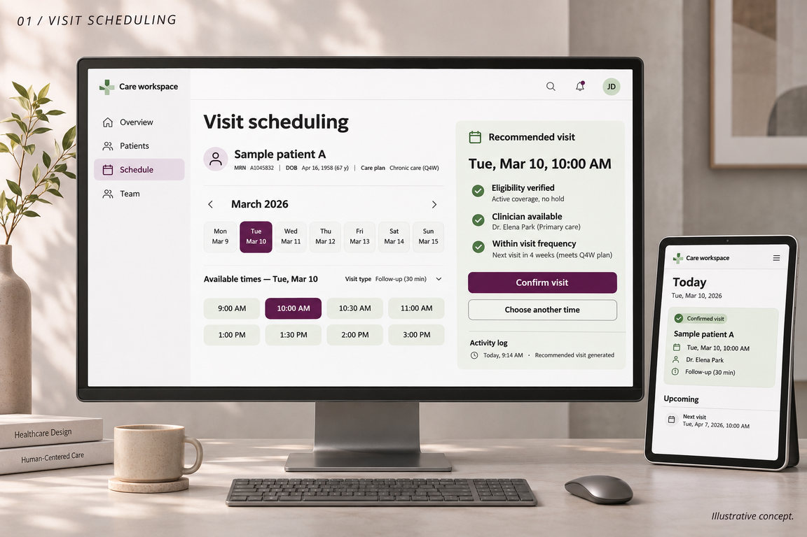
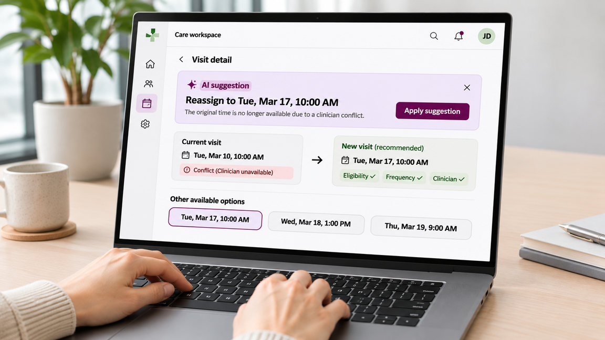

Healthcare — Clinician Scheduling
Scheduling UX for a U.S. home healthcare SaaS
Designed complex eligibility conditions, scheduling rules, and exceptions so users could understand them and act right away.
Illustrative concept

Scheduling screen
A calendar that shows available dates and their status first

AI-assisted Re-assignment
AI-assisted recommendations help schedulers resolve conflicts by validating clinician availability, patient eligibility, and visit frequency before confirming a new appointment.